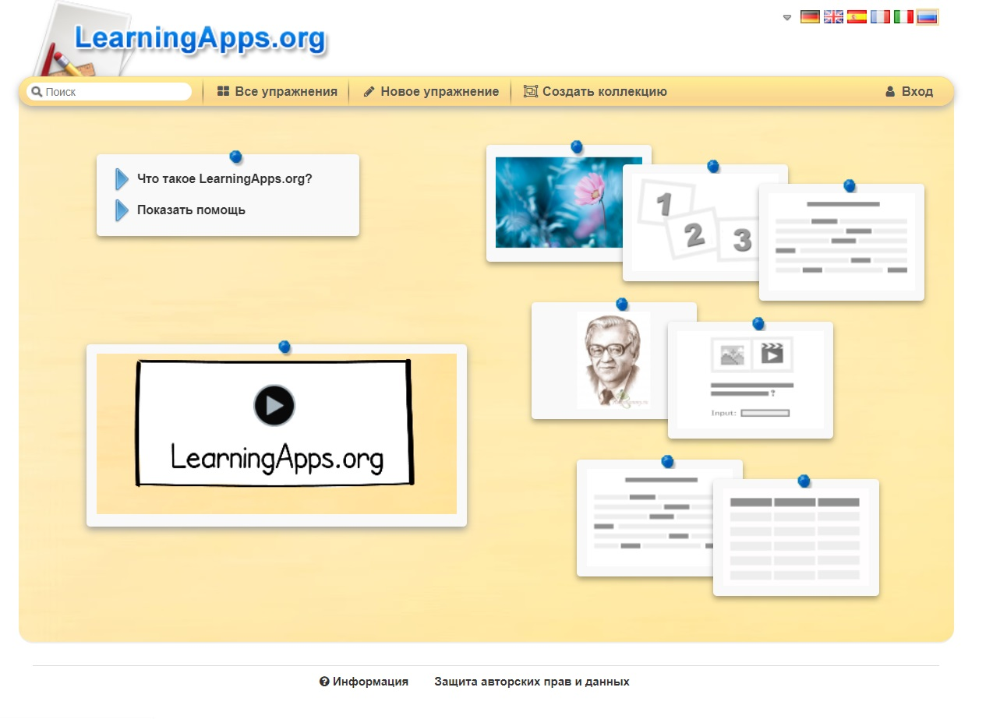

_____________________________________________________________________________________________________________
LearningApps — это 20 интерактивных упражнений ( в LearningApps они названы приложениями, поэтому далее в тексте эти термины будут использоваться как синонимы ) в игровом формате. Отсюда чувствуется, что, в первую очередь, сервис создавался для преподавателей, работающих с детьми. Например, задания вроде «Скачки» или «Найди пару» явно заимствованы из детских игр.
Самостоятельно сделать приложение, выбрав один из 20 вариантов игровых механик. После этого будет предложено ознакомиться с примерами подобных упражнений, чтобы понять логику задания. Дальше остается только заполнить необходимые поля и загрузить нужные изображения. Все формы снабжены подсказками, так что долго разбираться с ними не придется.
Использовать готовые работы других авторов в качестве шаблонов, изменив в них данные на ваши. Иногда изменить готовое проще, чем создавать новое. Проблема лишь в том, что в галерее приложения сгруппированы не по типам, а по темам.
Для тех, кто ищет бесплатную программу для создания упражнений познавательно-развлекательного характера, LearningApps - находка. Хотя сервис ориентирован на учителей средних школ, его можно удачно использовать и в корпоративном обучении – для разработки интересных заданий для самопроверки.
Логотип LearningApps

Главная страница LearningApps
Главные преимущества LearningApps:
Главные недостатки LearningApps:
A подробное описание данной программы и как ею пользоваться можно посмотреть по ссылке: LearningApps